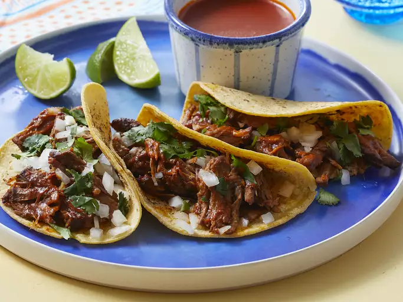

Birria de Res Tacos (Beef Birria Tacos)

Description
Birria, a.k.a. tacos de birria, is a Mexican dish of meat
(usually goat or beef) stewed in its braising liquid until
it reaches a melt-in-your-mouth texture. Traditionally,
it gets its flavor from dried chile peppers.
Birria can be served alone as a stew or on corn tortillas.
Ingredients
- 6 dried guajillo chile peppers, seeded
- 4 dried chile de arbol peppers, stemmed and seeded
- 2 dried ancho chiles, stemmed and seeded
- 1 tablespoon olive oil, or as needed
- 4 medium Roma tomatoes
- 2 tablespoons white vinegar
- 2 cloves garlic
- 2 teaspoons ground black pepper
- 4 whole cloves
- 1 pinch ground cinnamon
- 1 pinch ground cumin
- 1 pinch ground thyme
- 1 pinch dried marjoram
- 1 pinch dried oregano
- 1 pinch salt
- 4 pounds beef chunk roast
- salt and freshly ground black pepper to taste
- 18 corn tortillas
- 1 large white onion, finely chopped
- 1 bunch fresh cilantro, chopped
- 1 cup shredded queso asadero (white Mexican cheese) (Optional)
Steps